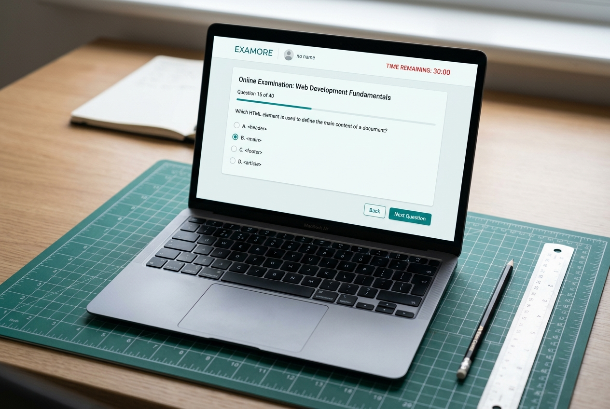
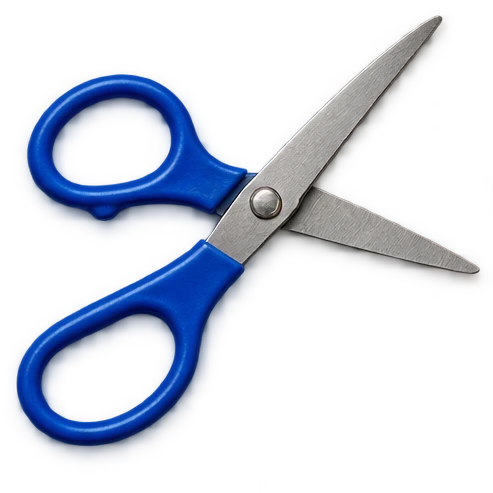

EXAMOREONLINE EXAMINATION SYSTEM
STUDENT · FACULTY · ADMINView projectExamore
Web-based exam platform with timed MCQ tests & auto-submission.




Building Ideas Into
Digital Experiences.
I'm a Computer Science Engineering student specializing in AI/ML at ITM University, exploring software development, web technologies, and practical projects that turn ideas into working experiences.
Build with purpose.
Learn by doing.
Turn logic into
impact.
Academic projects and digital initiatives.
Different challenges. Same curiosity.

Web-based exam platform with timed MCQ tests & auto-submission.
Exploring website design and development with AI tools.
Instagram cinema-roasting & movie review content channel.
Scroll through my development approach.
Who is the user? What is the core workflow? How can logic make the process effortless?
Transform logic into responsive layouts, working REST endpoints, and testable modules.
Clear validation, responsive layout adaptation, smooth timing, and clean code structure.
Verified technical skills supported
by my projects and coursework.
Curiosity & logic
are my favourite
learning tools.
ITM University · Current CGPA: 7.2/10. Specializing in Artificial Intelligence and Machine Learning.
UNDERGRADUATE · ITM UNIVERSITYSai Shivani Junior College, Hanamkonda, Warangal (TSBIE / TG BIE) · 88% in Maths, Physics, Chemistry.
CLASS XII · TSBIE BOARDNSR High School · 85%.
CLASS X · SSCBreak down the underlying problem before reaching for tools. Strong conceptual basics make any framework approachable.
Turn classroom concepts into functional apps, responsive interfaces, and testable modules.
Explore systems, micro-controllers, and algorithmic logic through personal experimentation.
Verified academic history and programming credentials from my resume.
ITM University
Sai Shivani Junior College, Hanamkonda, Warangal
NSR High School
Hands-on hardware, self-hosting,
and creative technology experiments.
Running private home servers using Linux, Docker containerization, and Proxmox virtualization environments.
Exploring 2D/3D game mechanics, shaders, and visual rendering effects using Godot, Unity, or WebGL.
Creating smart gadgets and micro-controller automation experimenting with ESP32 and Arduino boards.
Exploring flight controllers, rovers, and real-time telemetry sensor logic to connect software with the physical world.
A few small experiments.
Go on, give them a try.
Same letters. A different feeling.
Pick a color. Change the mood.
I'm always open to discussing technology, software development, AI/ML, and student opportunities.
Email Varun varunurugonda253@gmail.com Stay curious,